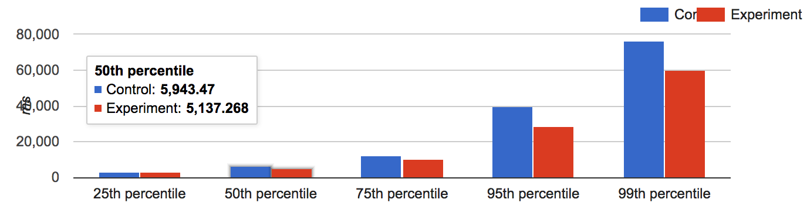
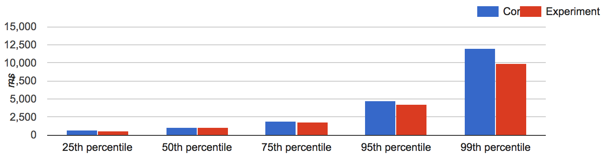
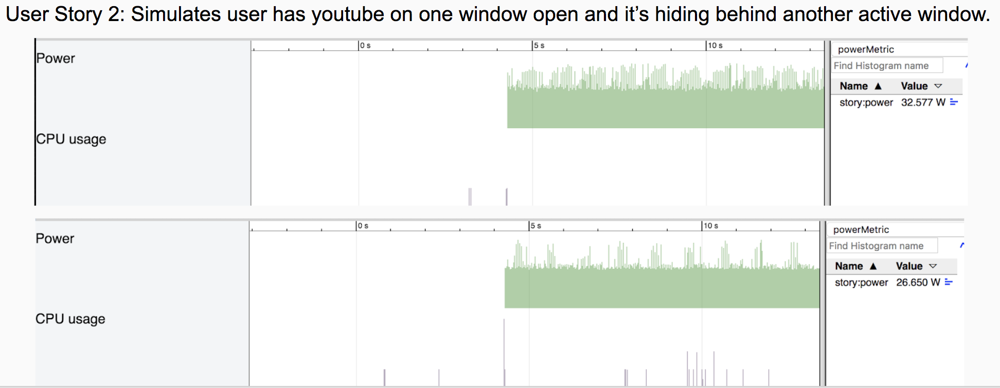

Chrome Graphics: Viz Update
Sunnyvale, 2018/04/18
About this talk
- Viz: what is it anyway?
- Major components
- Where are we
- Next Steps
Viz: What Is It
- The new name for the GPU process
-
- For the site-isolated web
- To improve graphics performance 20% or more
Viz API Surface
Why Rename?
- GPU Process
- Viz Process adds OOP-D and OOP-R
OOP-D: From Browser to Viz
- GPU: DisplayCompositor uses CommandBuffer
- Viz: DisplayCompositor doesn't need a CommandBuffer
- For Vulkan compositing
- But introduces challenging asynchrony...
Site Isolation
- Historically: one client / web contents
- But exploits like SPECTRE make cross-origin iframes scary
- Require synchronized draw of CompositorFrame from many renderers.
- And events routed back to each renderer
- Mitigate asynchrony:
- Surface Synchronization
- New Event Targeting
Surface Synchronization
- UI can asynchronusly request atomic update of itself and web platform children
- On in m64 m66 on desktop. Targeting m68 for Android
- Required for OOP-D. But also reduces UI variance!
- Foreground Tab First Loaded

- Navigation to First Contentfull Paint

New Event Targeting
-
- Viz version 1 in Finch trial (
#enable-viz-hit-test-draw-quad) in m64 m67
- Staggered rollout for correctness and performance
Enhanced Draw Occlusion
- OOP-D can increase overdraw on CrOS and for site isolated frames
- Mitigate with enhanced draw conclusion
- Reduces power consumption 20% on CrOS:

- In trial now
#enable-draw-occlusion
- On in m64 m67
OOP-R From Renderer
- Renderer with GPU Process
- Rasterization in Viz
- Enable
--enable-gpu-rasterization --enable-oop-rasterization
- Trial in m70
OOP-D: No CommandBuffer
- Current OOP-D implementation uses an in-memory CommandBuffer
- Use SkiaRenderer with SkDeferredDisplayList instead to support Vulkan
- Prototyping now with first Vulkan pixels. Trial in m69
OOP-R: No CommandBuffer
- First OOP-R implementation ships paint opts over a CommandBuffer
- Future OOP-R uses SkDeferredDisplayList instead for parallelism and Vulkan
- Status: designing / prototyping
Summary
- Viz: expanded GPU process
- Performance improvement from
- Draw occlusion culling
- Removing command buffers
- Using Vulkan
- We've made progress. First benefits now reaching stable
- Lots more to come
Backup Slides
OOP-D More Details
Final State